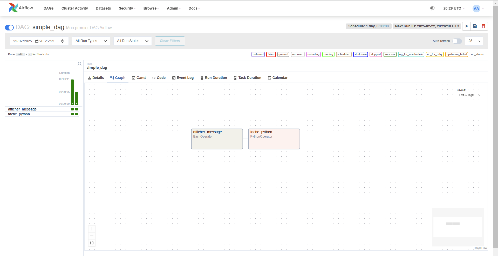

🚀 Étape 2 : Création d'un DAG Simple
🎯 Objectif
Créer un DAG qui permet d'explorer l'environnement d'Airflow et de comprendre les concepts de base.
📚 Ressources
📝 Exercices Pratiques
Exercice 1 : Configuration initiale
Description
Nous allons créer notre premier DAG Airflow avec une configuration de base.
from datetime import datetime, timedelta
from airflow.models.dag import DAG
from airflow.operators.bash import BashOperator
default_args = {
# À compléter
}
dag = DAG(
# À compléter
)
tache_afficher_message = BashOperator(
# À compléter
)
Tâches à réaliser
- Créer un nouveau fichier
simple_dag.pydans le dossierdags. -
Définir les arguments suivants dans
default_args:-
owner: votre nom -
retries: 2 -
retry_delay: 10 minutes -
start_date: date actuelle
-
-
Créer une instance de DAG avec:
-
ID:
'simple_dag' -
Arguments par défaut configurés
default_args=default_args -
Description personnalisée
description='.....' -
Intervalle d'exécution: 1 jour
schedule_interval=timedelta(days=1)
-
-
Ajouter une tâche
BashOperatorqui affiche "Bonjour, Airflow!" nommerafficher_message.
Astuce
- Le fichier doit être placé dans le dossier
dags. - Utilisez
catchup=Falsepour éviter l'exécution des DAGs historiques.
Solution
Afficher la solution
from datetime import datetime, timedelta
from airflow.models.dag import DAG
from airflow.operators.bash import BashOperator
default_args = {
'owner': 'votre_nom',
'retries': 2,
'retry_delay': timedelta(minutes=10),
'start_date': datetime.now(),
}
dag = DAG(
'simple_dag',
default_args=default_args,
description='Mon premier DAG Airflow',
schedule_interval=timedelta(days=1),
catchup=False
)
tache_afficher_message = BashOperator(
task_id='afficher_message',
bash_command='echo "Bonjour, Airflow!"',
dag=dag
)
Exercice 2 : Intégration Python
Description
Ajoutez des tâches Python à votre DAG pour étendre ses fonctionnalités.
from airflow.operators.python import PythonOperator
import logging
def generer_message():
logging.info("Exécution de la tâche Python")
return "Tâche exécutée avec succès"
tache_python = PythonOperator(
# À compléter
)
# Définition des dépendances
# À compléter
Tâches à réaliser
- Ajouter le code ci-dessus dans
simple_dag.py - Créer la fonction Python
generer_message()qui utilise le logger pour afficher un message - Ajouter une nouvelle tâche
tache_pythonutilisantPythonOperatoravec la fonctiongenerer_message() - Définir les dépendances pour que
tache_pythons'exécute aprèstache_afficher_message
Astuce
Pour définir l'ordre d'exécution des tâches, utilisez les opérateurs de dépendance:
- Syntaxe:
tache_1 >> tache_2(tache_2 s'exécute après tache_1) ou - Syntaxe:
tache_2 >> tache_1
Solution
Afficher la solution
import logging
from datetime import datetime, timedelta
from airflow.models.dag import DAG
from airflow.operators.bash import BashOperator
from airflow.operators.python import PythonOperator
default_args = {
'owner': 'votre_nom',
'retries': 2,
'retry_delay': timedelta(minutes=10),
'start_date': datetime.now(),
}
dag = DAG(
'simple_dag',
default_args=default_args,
description='Mon premier DAG Airflow',
schedule_interval=timedelta(days=1),
catchup=False
)
tache_afficher_message = BashOperator(
task_id='afficher_message',
bash_command='echo "Bonjour, Airflow!"',
dag=dag
)
def generer_message():
logging.info("Exécution de la tâche Python")
return "Tâche exécutée avec succès"
tache_python = PythonOperator(
task_id='tache_python',
python_callable=generer_message,
dag=dag
)
# Définition des dépendances
tache_afficher_message >> tache_python
🔍 Vérification
Pour valider votre DAG :
-
Vérifiez sa présence dans l'interface web d'Airflow.
-
Connectez-vous avec vos identifiants :
- Utilisateur :
airflow - Mot de passe :
airflow
- Utilisateur :
-
Recherchez votre DAG :
- Dans la liste des DAGs disponibles, trouvez
simple_dag 
- Dans la liste des DAGs disponibles, trouvez
-
Déclenchement et surveillance :
- Déclenchez manuellement le DAG via l'interface
-
Visualisez le graphe :
- Accédez à l'onglet "Graph View"
- Vous devriez voir la représentation visuelle de votre DAG
- 
-
Analysez les logs :
- Double-cliquez sur chaque tâche pour accéder aux logs
- Vérifiez le bon déroulement des exécutions